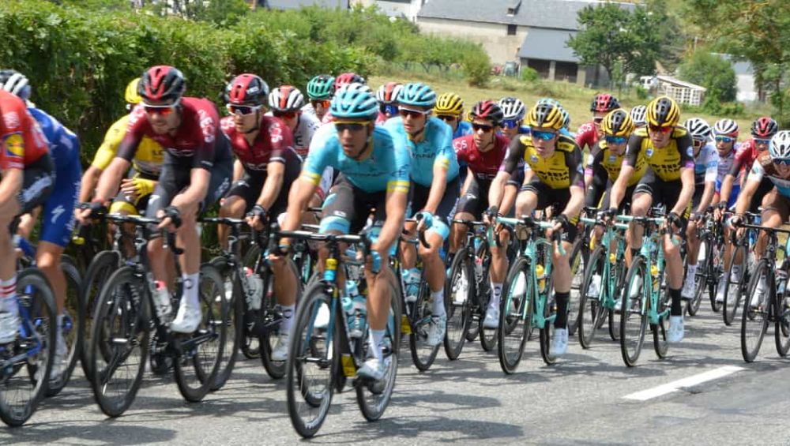

Verdens bedste cykelby:
Tour de France-ruten i København 2021 er klar
Verdens største cykelløb, Tour de France, kommer til verdens bedste cykelby i
sommeren 2021.
København er den officielle start-by, og nu er ruten gennem byens gader klar
AF MIA GARDE JENSEN
TIRSDAG DEN 24. MARTS 2020 KL.14.00
Åbningsetapen af Tour de France den 2. juli 2021 bliver i hjertet af København.
Den 13 kilometer lange enkeltstart kommer blandt andet forbi Dronning Louises Bro, Fælledparken,
Kastellet, Amalienborg, Den Sorte Diamant og Rådhuspladsen.
Den flade rute gennem hovedstadens gader uden skarpe sving giver mulighed for fuld fart i
pedalerne.
”Tour-starten i Københavns gader er en drøm, der bliver virkelighed. Jeg glæder mig til, at byen
trækker i gult, og feltet drøner igennem vores smukke by i fuld fart. Det bliver en folkefest i
København, når verdens største cykelløb møder verdens bedste cykelby”, siger overborgmester
Frank Jensen (S).
Aktiviteter på tværs af byen
Københavnerne kan se frem til aktiviteter på tværs af byen f.eks. i fanzoner, til lokale pop-up
events, storskærmsarrangementer og aktiviteter hos flere af Københavns kulturinstitutioner.
Blandt andet vil Designmuseum Danmark, CPH:DOX og Det Kgl. Bibliotek være en del af Københavns
markering af Tour de France og på deres egen måde formidle og oplyse om cykelkultur og
-historie.
At Tour de France starter i København, har krævet års indsats og skyldes især Københavns unikke
cykelkultur og -infrastruktur og hverdagscyklisme.
Ruten på første etape går igennem indre by, forbi kastellet, videre ud af
ydre Østerbro og tilbage via ydre og indre Nørrebro.
Trafikale ændringer
Enkeltstarten i København kommer til at påvirke centrale trafikårer på Nørrebro, Østerbro og i Indre
By.
Københavns Kommune har stort fokus på, at det skal være en god oplevelse for københavnerne at få
Touren på besøg, selvom det får indvirkning på trafikken i en kort periode.
Der er fokus på, at afspærringer mv. står i så kort tid, som overhovedet muligt for at afvikle
løbet. Københavnerne vil blive informeret tæt om alle trafikale ændringer op til og under
løbsafviklingen.
Trafikændringerne omfatter i hovedtræk følgende:
H.C. Andersens Boulevard afspærres i fire dage fra onsdag den 30. juni om morgenen til lørdag den 3.
juli kl. 15.00.
Gaderne omkring løbsruten afspærres fredag den 2. juli om morgenen til lørdag den 3. juli kl. 15.00.